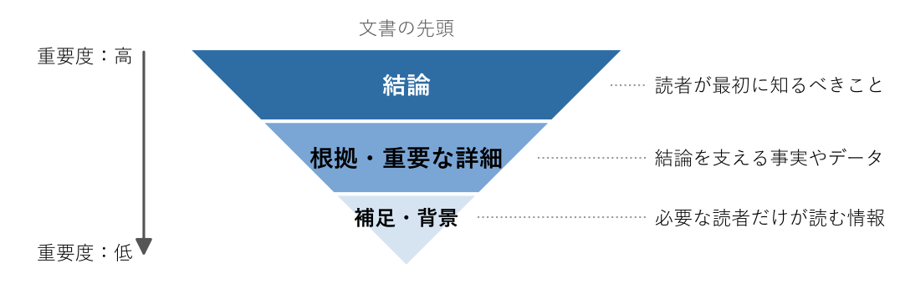

第 3 章 構成を組み立てる
文書の構成とは、情報をどの順序で、どのような単位に分けて並べるかである。構成がよければ、読者は必要な情報に素早くたどり着ける。本章では、結論を先に書くこと、見出しの設計、段落の組み立て、文書の分割について説明する。
結論を先に書く
技術文書の読者は忙しく、文書を最後まで読むとは限らない。そこで、最も重要な情報を文書の先頭に置き、重要度の高い順に情報を並べる。この構成を逆ピラミッド型と呼ぶ（図 3）。


図 3 逆ピラミッド型の構成
逆ピラミッド型の構成には次の利点がある。
読者は冒頭を読むだけで要点をつかめる。
読者は、続きを読むかどうかを冒頭で判断できる。
読者が途中で読むのをやめても、重要な情報は伝わっている。
次の例は、リリースの延期を依頼する報告である。悪い例では、出来事を時間の順に書いているため、読者は最後まで読まないと依頼の内容が分からない。
悪い例 |
良い例 |
|---|---|
昨日の 10 時ごろ、監視システムがデータベースの接続エラーを検知したため、調査を開始した。ログを確認したところ、接続数が上限に達していた。設定を見直したが、原因はまだ特定できていない。以上のことから、明日のリリースを延期したい。 |
明日のリリースを延期したい。昨日発生したデータベースの接続エラーの原因が、まだ特定できていないためである。経緯は次のとおりである。昨日の 10 時ごろ、監視システムがデータベースの接続エラーを検知した。（以下略） |
なお、手順書やチュートリアルの本文は、作業の順序に従って書く。この場合も、冒頭には「この文書で何ができるようになるか」と「作業の全体像」を示し、結論を先に書く原則を守る。
見出しを設計する
読者は本文を読む前に見出しを読み、必要な箇所を探す。見出しは文書の目次であり、検索の手がかりでもある。見出しを設計するときは、次の点に注意する。
見出しだけを読んで、その節に何が書かれているか分かるようにする。
同じ階層の見出しは、粒度と表現の形をそろえる。
階層は 3 段程度にとどめる。それ以上深くなる場合は、文書の分割を検討する。
悪い例 |
良い例 |
|---|---|
その他 |
ログの保存期間を変更する |
注意点 |
本番環境で実行する前の確認事項 |
インストール／設定する／使い方について |
インストールする／設定する／使う |
「その他」と「注意点」は、何が書かれているのかが見出しから分からない。「インストール／設定する／使い方について」は、名詞、動詞、「について」が混在しており、並列の関係が見えにくい。
執筆を始める前に、見出しだけを並べた骨組み（アウトライン）を作るとよい。アウトラインの段階であれば、構成の誤りを少ない手間で直せる。アウトラインをレビューしてもらうのも効果的である。
11. 背景と目的
22. スコープ
3 2.1 対象とすること
4 2.2 対象としないこと
53. 設計の概要
64. 詳細設計
75. 検討した代替案
86. 未解決の課題
段落を組み立てる
段落は、一つのトピックを扱う文のまとまりである。これを 1 段落 1 トピックの原則と呼ぶ。段落の先頭には、その段落の要点を述べる文（トピックセンテンス）を置き、続く文でそれを支える根拠や具体例を述べる。このような段落の書き方をパラグラフライティングと呼ぶ。
悪い例 |
良い例 |
|---|---|
現在のバッチ処理は、1 台のサーバーで動いている。データ量は毎年 2 倍に増えている。処理時間は 4 時間で、夜間の処理枠は 6 時間である。そのため、処理を複数のサーバーに分散することを提案する。 |
バッチ処理を複数のサーバーに分散することを提案する。現在のバッチ処理は 1 台のサーバーで動いており、処理時間は 4 時間である。データ量は毎年 2 倍に増えているため、来年には夜間の処理枠である 6 時間を超える見込みである。 |
良い例では、最初の文を読むだけで段落の要点が分かる。パラグラフライティングで書かれた文書は、各段落の最初の文だけを拾い読みすると、文書全体の要約になる。執筆後にこの方法で読み返すと、構成の問題を見つけやすい。
文書を分割してリンクで結ぶ
一つの文書には一つの目的だけを持たせる。これを 1 文書 1 目的の原則と呼ぶ。文書が大きくなり、目的や読者が複数になったら、文書を分割する。分割するときは、「第 2 章 書く前の準備」で説明した Diátaxis の分類が目安になる。
分割した文書は、リンクで結ぶ。図 4 は、README を入り口として各文書へ案内する構成の例である。
図 4 README を入り口とした文書の構成の例
同じ情報を複数の文書に書くことは避ける。同じ内容が複数の場所にあると、一方だけが更新されて内容が食い違う。情報は一か所に書き、ほかの文書からはその場所へリンクする。